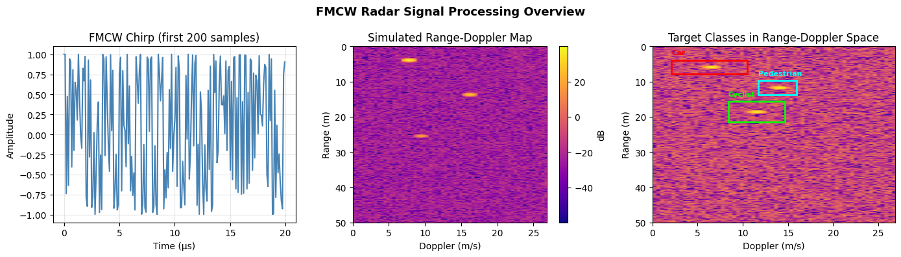
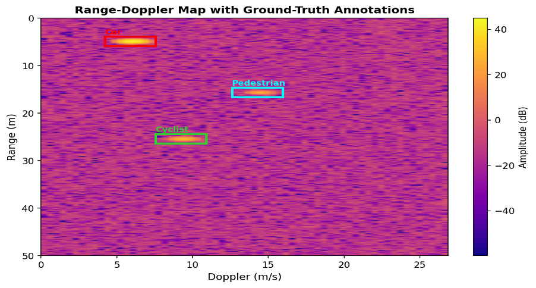
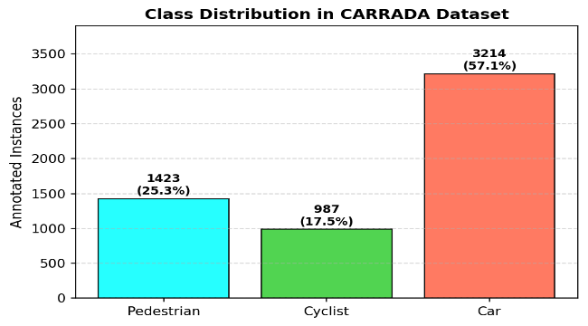
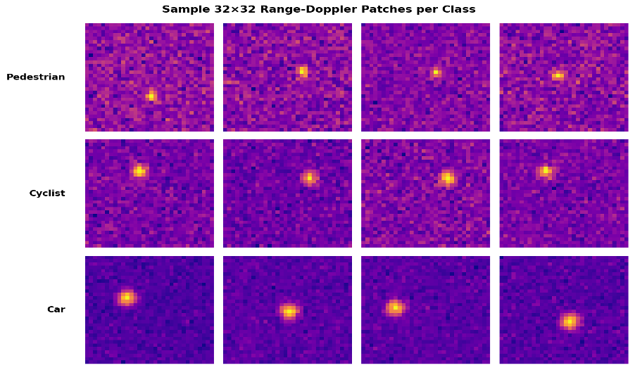
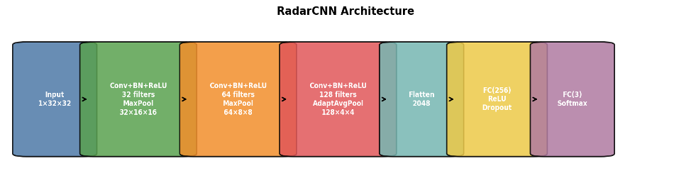
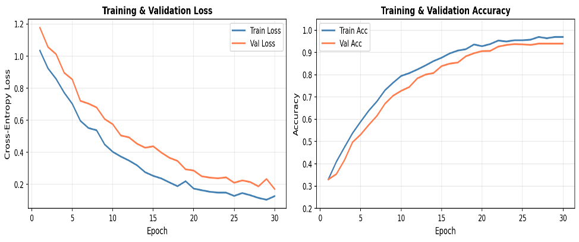
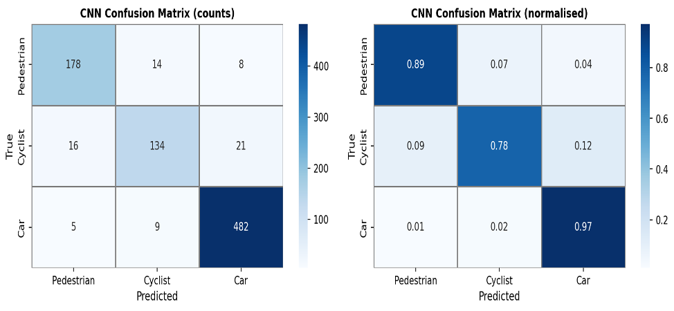
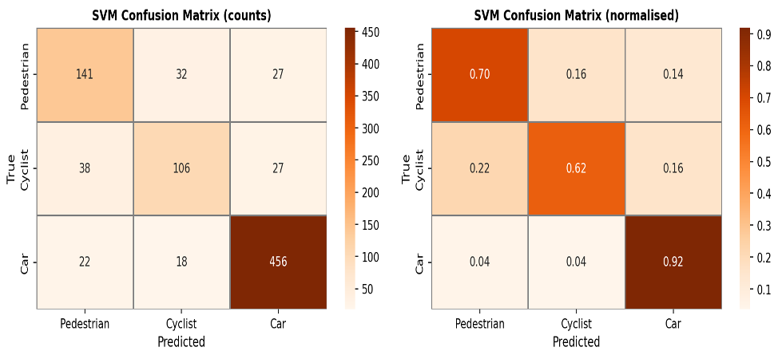
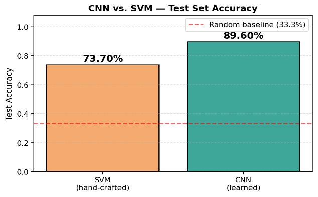

Overview
Can a CNN out-see hand-crafted radar features?
Autonomous vehicles and driver-assistance systems lean on FMCW radar because it works reliably in rain, fog, and darkness while giving direct velocity information through the Doppler shift. A core perception task is target classification — deciding whether a detected object is a pedestrian, a cyclist, or a car.
Classical approaches rely on hand-crafted radar features such as Doppler centroid, radar cross-section, and spectral spread. But these scalar features may not fully capture the two-dimensional spatial structure of a Range-Doppler (RD) map — and RD maps resemble images, where local spatial patterns carry meaning. This project implements a lightweight CNN for RD-patch classification and directly compares it against an SVM baseline trained on six hand-crafted features, under identical data splits.
On the CARRADA automotive radar dataset, the CNN reaches 89.6% test accuracy and a macro F1-score of 0.89, beating the SVM's 73.7% / 0.75 by a wide margin — evidence that learned spatial features generalize better than scalar hand-crafted ones for this task.
Background
FMCW radar, Range-Doppler maps, and the CARRADA dataset
An FMCW radar transmits a linear chirp whose frequency increases from f0 to f0+B over a chirp duration T. The received echo from a target at range R is delayed by:
c is the speed of light. A range FFT along fast-time samples turns this delay into an estimated range.
S is the chirp slope. A second FFT along slow-time chirps estimates Doppler velocity, forming the 2-D Range-Doppler map.

CARRADA dataset
CARRADA contains automotive radar data collected with a 77 GHz FMCW radar: 30 sequences, 12,666 annotated frames, and three object classes — pedestrian, cyclist, car. Each RD map is 256×64, with range resolution 0.195 m/bin and Doppler resolution 0.420 m/s/bin.

Method
Preprocessing, the CNN, and the SVM baseline
Data preprocessing
Each RD map is loaded on a logarithmic dB scale and normalized with z-scores. Target
bounding boxes are expanded by 2 bins to include surrounding clutter context, then each
crop is resized to a fixed 32×32 patch — the CNN's input.
Dataset composition
5,624 labeled instances in total: Pedestrian 1,423 (25.3%), Cyclist 987 (17.5%), Car 3,214 (57.1%). The class imbalance (cars are the majority, cyclists the minority) motivates a 70 / 15 / 15 stratified split into train, validation, and test sets so every split keeps the same class proportions as the full dataset.


RadarCNN architecture
Three convolutional blocks, each a 3×3 convolution with batch
normalization and ReLU. Max-pooling follows the first two blocks; adaptive average pooling
follows the third. Channel sizes go 1→32→64→128. A fully
connected layer with dropout feeds a final 3-class softmax output.
298,499 trainable parameters in total.

Training protocol
Adam optimizer (lr = 1e-3, weight decay 1e-4), cross-entropy
loss, batch size 64, 30 epochs. The checkpoint with the best validation accuracy is kept
for final testing.
SVM baseline
An RBF-kernel SVM trained on the same split, using six hand-crafted features:
- Mean Doppler centroid
- Peak range bin
- Doppler spread
- Mean patch power
- Peak power
- Range spread
Results
The CNN wins on every class, and by the widest margin on the hardest one

| Class | CNN Prec. | CNN Rec. | CNN F1 | SVM Prec. | SVM Rec. | SVM F1 |
|---|---|---|---|---|---|---|
| Pedestrian | 0.90 | 0.89 | 0.89 | 0.70 | 0.71 | 0.70 |
| Cyclist | 0.86 | 0.79 | 0.82 | 0.68 | 0.60 | 0.64 |
| Car | 0.94 | 0.97 | 0.95 | 0.90 | 0.93 | 0.91 |
| Macro Avg | 0.90 | 0.88 | 0.89 | 0.76 | 0.75 | 0.75 |
| Metric | CNN Train | CNN Val | CNN Test | SVM Test |
|---|---|---|---|---|
| Accuracy | 95.2% | 91.4% | 89.6% | 73.7% |
| Macro F1 | — | — | 0.89 | 0.75 |
| Parameters | 298,499 | — | — | 6 features |



Discussion
Key findings
CNN filters behave like learnable matched filters on the Range-Doppler map — similar to classical radar matched filtering, but the kernels are learned rather than hand-derived.
Pooling suppresses noise by combining local information while preserving the spatial structure that scalar SVM features discard.
Car achieves the highest F1 for both models (0.95 CNN / 0.91 SVM) — vehicle radar returns are stronger and more spatially compact than pedestrian or cyclist returns.
Pedestrian–cyclist confusion is the dominant error mode for both models: both classes produce weak returns with similar Doppler spread, and the SVM confuses them roughly twice as often as the CNN.
Limitations: fixed radar mounting geometry, no temporal information across frames, class imbalance (cars are 57% of samples), and the method assumes clean detection bounding boxes.
Future work: temporal models such as LSTMs or 3D CNNs to exploit frame-to-frame motion, radar-specific data augmentation, and integration with CFAR-based detection instead of ground-truth boxes.
Tech Stack